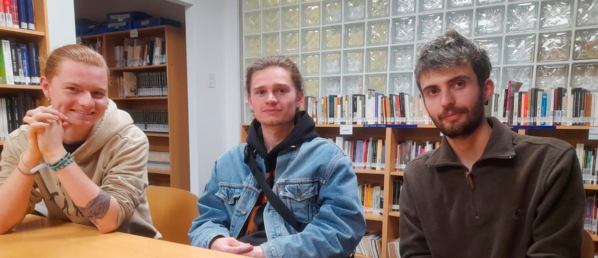
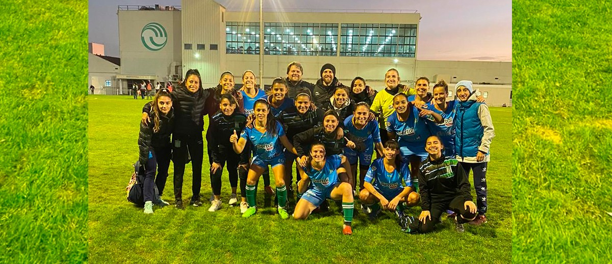

UntrefSchool
¿Quienes somos?
Bienvenidos a Untref School, un espacio dedicado a la formación de las próximas generaciones. Una institución dedicada, no solo al desarrollo académico, sino también al desarrollo personal. En Untref School los jóvenes son educados tanto en ciencias económicas como sociales y políticas, bellas artes y formación ética y ciudadana. Nuestro objetivo es formar a los mejores futuros ingenieros, abogados, artistas, doctores, politicos o cualquier otra profesión por la que desarrollen algún tipo de interés. Pero no solo que sean excelentes profesionales sino también buenos ciudadanos.
¿Por qué elegirnos?
Untref School es un espacio donde todos son bienvenido y pueden desarrollarse con completa libertad. Disponemos de asistencia pedagógica para jóvenes con capacidades diferentes, para que cualquiera pueda venir aquí. Las aulas están equipadas con las ultimas tecnologías, para que tanto alumnos y profesores dispongan de todas las herramientas necesarias para adaptarse a los tiempos modernos. Esta escuela ya cuenta con 100 años de trayectoria y ha sido reconocida como una de las mejores escuelas primarias del país. ¿Tienen alguna consulta? no dudes en contactarte, contamos con visitas guiadas para los padres interesados con la asistencia de todo el equipo docente. Los esperamos!
Propuesta educativa
Implementación de metodologías modernas
fomentar la expresión artística
fomentar el respeto y el compañerismo
Últimas noticias
Alumnos extranjeros destacan el ámbito de familiaridad en el que estudian
Tres estudiantes franceses que participan de un programa de intercambio contaron su experiencia en la UNTREF y remarcaron que la estrecha conexión con los docentes y compañeros de cursada es algo que no encuentra en su país.
Con 15 medallas, la UNTREF dijo presente en los JUAR
En la etapa regional de la competición la Universidad obtuvo el título en fútbol femenino, 12 medallas en natación, una en vóley femenino y otra en atletismo masculino.